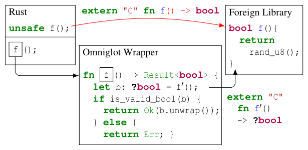
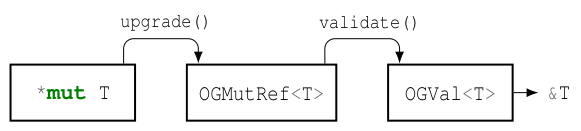
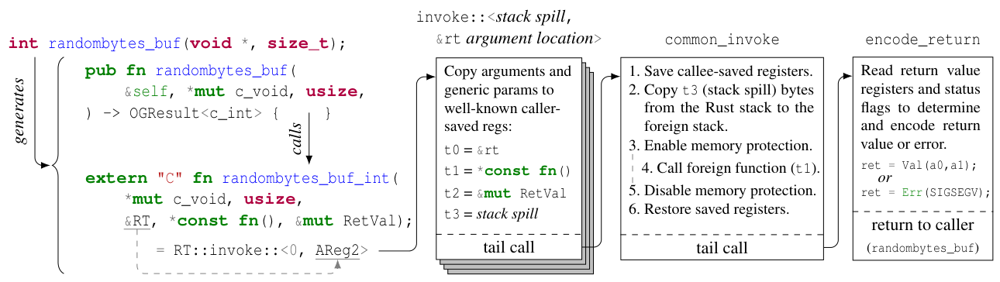
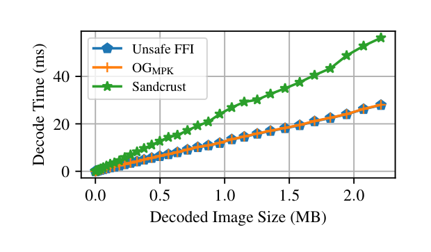
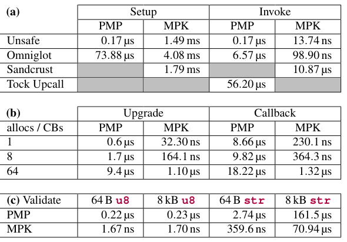

Building Bridges: Safe Interactions with Foreign Languages through Omniglot
This page was written by an AI model to give a high-level overview of the paper. Please check the paper for detail: USENIX.
Memory- and type-safe languages such as Rust eliminate entire classes of bugs by construction: the compiler, not the programmer, enforces that references are valid, that values hold only the bit-patterns their type allows, and that mutable data is never aliased. But real systems cannot be rewritten overnight. A Rust kernel or application still needs to call into decades-old C libraries for cryptography, filesystems, or networking. The moment Rust calls a foreign function through its unsafe Foreign Function Interface (FFI), that foreign code runs in the same address space with the same privileges as the host, and a single bug in it, like Heartbleed, can corrupt host memory in ways that silently violate Rust's safety guarantees.
Prior work has tried to contain foreign code using memory isolation, running it in a separate hardware- or software-enforced protection domain so it cannot touch memory outside its sandbox. The paper argues this is necessary but not sufficient. Even a foreign library that never escapes its sandbox can still break the host's soundness through subtler mismatches: Rust's aliasing XOR mutability rule, its requirement that only certain bit-patterns are valid for a given type (so that a C int standing in for a bool can corrupt an enum through an optimization called niche filling), and its assumptions about memory ownership. Approaches that instead copy or serialize all shared data, such as Sandcrust, sidestep these issues but pay a real performance cost, and most other isolation systems do not address type or aliasing safety at all.
Omniglot's key idea is to stop trying to prove that the entire composed program, host plus foreign library, is sound for every possible execution. Instead it reasons about one execution at a time: it models each foreign function with a weaker type signature that makes no unsafe claims about Rust's invariants, and only re-establishes the useful, stronger type after validating, at runtime, that the returned value actually satisfies it. The same idea extends to foreign memory: Omniglot represents an address in foreign memory first as a raw, unchecked pointer, then as a reference that is merely known to point into a valid allocation, and only as a fully dereferenceable Rust value once its bit-pattern has been checked. A set of compiler-enforced "scopes," built from Rust's own borrow checker, make sure these checks cannot be invalidated behind the host's back, for example by a write that aliases previously validated memory, without costing anything at runtime.
Mechanically, Omniglot sits between a memory isolation primitive (hardware or software) and the host program. It gives host code an API to allocate and write into foreign memory, call foreign functions inside the sandbox, and register callbacks the foreign library can invoke back into Rust. Every foreign pointer must be explicitly "upgraded" into a checked reference and then "validated" into a readable value before Rust code can use it as its real type, and a modified version of the standard rust-bindgen tool generates these bindings automatically from C headers. Because allocation and access are tracked through typed scopes rather than dynamic locks, and because foreign function calls are dispatched through a trampoline that uses the Rust compiler's own knowledge of each function's calling convention, Omniglot avoids copying shared data and avoids the overhead of a generic, dynamic FFI mechanism like libffi.
The authors implement two runtimes, one for the Tock embedded kernel using RISC-V Physical Memory Protection (PMP) and one for Linux userspace using x86 Memory Protection Keys (MPK), and evaluate six real, unmodified libraries spanning cryptography, filesystems, networking, compression, and image decoding. Omniglot's safety checks add no measurable overhead in several cases and at most a few percent in most others beyond the cost of memory isolation alone, and it substantially outperforms Sandcrust, the closest prior system with comparable safety guarantees, on image decoding workloads.

Key takeaways
- Memory isolation alone does not preserve Rust's soundness: differences in aliasing rules, valid bit-patterns, and ownership between languages can violate safety even inside a sandbox.
- Omniglot's trick is to model foreign functions and foreign memory with weaker, unsafe-but-honest types, then recover Rust's real types only after a runtime validation check.
- Reference and validation types (raw pointer →
OGMutRef<T>→OGVal<T>) and compile-time "allocation" and "access" scopes enforce these checks and their temporal validity with zero runtime locking cost, using the Rust borrow checker. - Omniglot avoids copying or serializing shared data, unlike Sandcrust, which gives it comparable safety at much lower overhead.
- Two prototypes, OGPMP (Tock kernel, RISC-V PMP, strong isolation) and OGMPK (Linux userspace, x86 MPK, weaker isolation), both add only small overhead over memory isolation alone across six real libraries.
From an unsafe FFI to a sound one
What makes Rust's existing FFI unsound, how Omniglot's types and scopes close the gaps, and how calls are actually dispatched into foreign code.
1 · Why the ordinary FFI is unsound
Rust interacts with foreign code through the C Application Binary Interface (ABI), the lowest common denominator most languages can target. Tools like rust-bindgen generate Rust function signatures from C headers, wrapped in extern "C" blocks, using raw pointers in place of Rust references. Every such binding is implicitly marked unsafe, meaning the compiler cannot reason about its safety and the burden shifts entirely to the developer.
The paper walks through three concrete ways this can go wrong even for "internally correct" foreign code that only touches memory it was given:
- Memory safety. A foreign function given a raw pointer into a Rust
Veccan read or write adjacent memory, for example corrupting the vector's length field with an off-by-one error, breaking the safe abstraction Rust's standard library assumes always holds. - Aliasing and mutability. Rust requires that mutable data is never aliased. A C function that both receives a mutable pointer to a buffer and returns a pointer to the same buffer (e.g., for in-place encryption) makes it trivial to construct an immutable Rust reference that aliases a live mutable one, which is undefined behavior.
- Type and valid-value safety. Rust assumes some primitives, like
bool, only ever hold specific bit-patterns (0 or 1), and uses that assumption to optimize memory layout (niche filling, packing an enum's discriminant into another field's unused bit-patterns). A C function that returns anint-typed boolean containing, say, 2, written into a buffer Rust then reads as abool-tagged enum, can cause Rust to misinterpret the data entirely, producing a use-after-free or out-of-bounds access in practice.
2 · Why isolation alone does not fix this
Hardware or software memory isolation (page tables, PMP, MPK, software fault isolation) can stop a foreign library from touching memory outside its own sandbox. That addresses the first bullet above when the host never shares memory with the sandbox, but the moment data must flow between host and foreign code, for example to pass input and retrieve output, the aliasing and type-safety problems above remain untouched. The paper's threat model is that Omniglot must maintain Rust's soundness even when foreign code is arbitrary, untrusted, and adversarial, so long as a sufficiently strong isolation primitive exists; it does not try to prove the foreign library itself is correct, nor does it protect foreign code from a misbehaving host.
3 · The core approach: weaker bindings, then validate
Rather than modeling the whole composed program, Omniglot reasons about a single execution. For a foreign function whose real signature Rust cannot soundly trust, Omniglot generates an internal binding with a weaker return type (written ?bool in the paper for an untrusted boolean) that carries none of Rust's validity assumptions, so calling it cannot itself be unsound. A thin wrapper function then performs a runtime check, confirming the returned value is actually a valid bool, before casting it to the real, useful type and handing it back to host code. The same pattern, weak type first, validate, then strengthen, is applied uniformly to foreign memory.
4 · The runtime: sandboxing and the allocation API
Omniglot divides memory into regions exclusively owned by Rust and regions delegated to a foreign library instance, enforced by a pluggable, platform-specific runtime. The runtime exposes four operations to host code: OGRt::new(library) loads a library into the sandbox; stack_alloc allocates space on the foreign library's stack for the duration of a closure; setup_callback registers an address foreign code may jump back into Rust through; and invoke calls a foreign function and guarantees, on return, that no foreign threads are still running. A runtime is classified as strong if it fully isolates memory and blocks all concurrency primitives from foreign code (so Omniglot can safely host arbitrary adversarial libraries), or weak if the isolation can be circumvented, for example through system calls, in which case developers must additionally trust that the foreign library does not do so.
5 · Reference and validation types

To let host code read and write foreign memory without unrestricted access, Omniglot introduces a three-stage typestate for any address in foreign memory:
- Raw pointer (
*mut T). Can hold any address, may be dangling or misaligned; safe Rust cannot dereference it. OGMutRef<T>. Produced byupgrade-ing a raw pointer, after checking at runtime that it refers to an active, well-aligned foreign allocation large enough forT. Because its provenance cannot be tracked, Omniglot represents it as&UnsafeCell<MaybeUninit<T>>, which lets Rust write to it despite possible aliasing, whileMaybeUninitstops the compiler from assuming its bits are valid.OGVal<T>. Produced byvalidate-ing anOGMutRef<T>, after checking its bit-pattern matches a legal value ofT(size, alignment, and type-specific validity, such as being a non-surrogate Unicode code point for achar). Only this stage may be safely read and interpreted asT.
Types with higher-level invariants that cannot be checked purely from their bits and layout, such as Rust references with lifetime and provenance requirements, can never be validated this way; developers instead pass symbolic representations and keep the real data in Rust-owned memory.
6 · Temporal constraints: allocation and access scopes
Validation only holds until something invalidates it: a later write to aliased memory, a foreign allocation being revoked, or a callback running arbitrary foreign code. Rather than enforce this with a dynamic read-write lock, which could deadlock at runtime, Omniglot encodes these constraints as two compiler-tracked, branded types created once per library instance: an AllocScope and an AccessScope. A unique (&mut) borrow of a scope corresponds to a write-lock, a shared (&) borrow to a read-lock, and Rust's own borrow checker statically rejects any code that would hold both at once, or hold a reference beyond the scope that created it.
| Operation | Scope borrow required | Purpose |
|---|---|---|
ptr::upgrade(&AllocScope) | shared | Create an OGMutRef, bound to this allocation scope so it cannot outlive it |
stack_alloc(&mut AllocScope, closure) | unique | Allocate (and later revoke) foreign memory; prevents dangling references |
OGMutRef::write(val, &mut AccessScope) | unique | Write foreign memory, closing and reopening the access scope so stale OGVals become unusable |
OGMutRef::validate(&AccessScope) | shared | Produce an OGVal bound to the current access scope |
OGRt::invoke(&mut AllocScope, &mut AccessScope) | unique, unique | Run a foreign function, which may write memory or revoke allocations via a callback |
Because a validated OGVal is tied to one AccessScope borrow, any later operation that could invalidate it, a write or an invoke, must first take a unique borrow of that same scope, which the borrow checker guarantees cannot coexist with the outstanding shared borrow the OGVal holds. Code that tries to use a stale OGVal after such an operation simply fails to compile, at zero runtime cost. stack_alloc is deliberately more permissive: because it pairs an allocation with its own revocation inside one call, references created before the call may safely outlive the allocation's revocation, while references created inside the call's closure cannot escape it.
7 · Dispatching calls: the invoke trampoline

Switching into the foreign protection domain must preserve whatever arguments the Rust compiler placed in registers and on the stack for the call, without Omniglot knowing in advance each function's specific signature. Omniglot solves this by having its modified rust-bindgen generate, for every C function, a matching extern "C" Rust symbol with the identical argument list, so the Rust compiler itself lays out arguments according to the platform's C calling convention. That generated symbol's name is then aliased directly to one generic, per-runtime invoke function. Calling the generated binding therefore transparently calls invoke instead, letting Omniglot insert its protection-domain switch into the function's prologue without modifying the compiler or the foreign library. Extra, runtime-specific arguments (a reference to the runtime, the real target function pointer, a return-value slot, and a generic parameter encoding where these extras live) let the monomorphized invoke locate the real function, copy any stack-spilled arguments to the foreign stack, flip the isolation mechanism on, call the function, flip it off, and decode the return value or a fault into a Rust Result.
8 · Implementation: two runtimes
- OGPMP, for the Tock operating system kernel. Uses RISC-V Physical Memory Protection to run foreign libraries at a lower privilege level with no Tock kernel memory visible to them and no system call interface or concurrency primitives exposed. Foreign code can only return to the kernel by returning from the invoked function, calling a registered callback, or faulting. This is a strong runtime: it can safely host arbitrary adversarial libraries.
- OGMPK, for Linux userspace. Uses x86 Memory Protection Keys (MPK) to assign a protection key to all pages belonging to a foreign shared library (loaded into an isolated namespace via link-map lists) and its dependencies, and disables access to that key except while the library runs. MPK switches are fast (no system call), but prior work has shown MPK isolation can be defeated through system calls, memory mappings, signals, and races, so OGMPK is a weak runtime: developers must additionally trust, or separately enforce with mechanisms like seccomp-bpf, that the foreign library does not use those escapes or background concurrency.
- Omniglot itself is implemented as roughly 7,000 lines of Rust across both runtimes, plus an 860-line extension to
rust-bindgenthat generates Omniglot-compatible bindings directly from C headers.
How well these mechanisms perform across real libraries and against alternative approaches like Sandcrust is covered in the Evaluation tab.
Evaluation
What the paper measures, its key tables and figures in the paper's order, and what each one shows.
The paper runs two separate case studies, one per runtime, each on hardware suited to that environment, and compares Omniglot against an unsafe FFI baseline, memory isolation without Omniglot's safety checks ("isolation only"), and, for one library, the serialization-based Sandcrust.
| What | Value in the paper |
|---|---|
| OGMPK platform | CloudLab Wisconsin c220g5 node, two Intel Xeon Silver 4114 CPUs at 2.2 GHz, frequency scaling and hyperthreading disabled, benchmark pinned to one core, rustc 1.84.0-nightly, Linux 5.15.0 |
| OGPMP platform | Tock OS port on a ChipWhisperer CW310 FPGA running the OpenTitan EarlGrey design, RISC-V rv32imc CPU at 24 MHz |
| Libraries (OGPMP) | OpenTitan CryptoLib (HMAC-SHA256), LittleFS (filesystem), LwIP (TCP/IP network stack) |
| Libraries (OGMPK) | Brotli (compression), libsodium (cryptographic hashing), libpng (image decoding) |
| Baselines | Unsafe Rust FFI; memory isolation alone ("isolation only"); Sandcrust (IPC- and serialization-based isolation), for libpng |
| Metrics | End-to-end execution time and relative overhead; counts of Omniglot operations (invoke, callback, upgrade, validate) per benchmark iteration; per-operation microbenchmark latency |
Across six diverse libraries, Omniglot's safety checks add little over memory isolation alone
| Library | Runtime | invoke / callback / upgrade / validate | Unsafe | Isolation only | Omniglot |
|---|---|---|---|---|---|
| CryptoLib (HMAC-SHA256) | PMP | 14 / 0 / 10 / 2 | 9105 µs | 9145 µs (+0.44%) | 9145 µs (+0%) |
| LittleFS | PMP | 7 / 0 / 0 / 7 | 3115.3 µs | 3742.8 µs (+20.1%) | 3764 µs (+0.5%) |
| LwIP (ICMP echo) | PMP | 3 / 1 / 2 / 5 | 51.74 µs | 78.71 µs (+52.1%) | 81.4 µs (+3.4%) |
| Brotli | MPK | 2 / 0 / 0 / 4 | 3.12 ms | 3.14 ms (+0.6%) | 3.14 ms (+0%) |
| libsodium | MPK | 1 / 0 / 0 / 2 | 51.61 µs | 53.41 µs (+3.4%) | 53.41 µs (+0%) |
| libpng (23 kB image) | MPK | 5 / 15 / 16 / 3 | 352.98 µs | 397.93 µs (+12.7%) | 401.25 µs (+0.8%) |
What it shows. For each library, the table (the paper's Table 2) gives the number of Omniglot runtime operations performed per benchmark iteration, then execution time under an unsafe FFI baseline, under memory isolation alone, and under full Omniglot, with each later column's percentage overhead measured relative to the previous one. The large "isolation only" overheads (20.1% for LittleFS, 52.1% for LwIP, 12.7% for libpng) come from the cost of the underlying PMP or MPK domain switch itself, not from Omniglot; Omniglot's own marginal addition on top of isolation is at most 3.4%, and 0% in three of the six libraries.
What to take from it. The dominant cost of using Omniglot is the memory isolation mechanism it is built on, not its safety machinery. The two largest relative Omniglot overheads (LwIP's 3.4%, libpng's 0.8%) occur for libraries that use callbacks and many small upgrade/validate operations, consistent with the cost of tracking live foreign allocations and callbacks scaling with how many of them exist (seen more directly in Result 6 below).
CryptoLib: a single tracked allocation makes Omniglot's checks nearly free
What it shows. Encapsulating OpenTitan CryptoLib's HMAC-SHA256 over 4 kB of data (in 512 B batches) costs 9145 µs under memory isolation versus 9105 µs unsafe (+0.44%), and adding Omniglot's checks adds no further measurable time. The benchmark tracks only one foreign allocation (the HMAC context) and validates a returned byte array, whose type (fixed-width integers) is unconditionally valid.
What to take from it. When a library's interface is simple, a single long-lived allocation and a type, like a byte array, that carries no extra validity constraints, the Rust compiler can optimize Omniglot's validation away entirely, leaving overhead indistinguishable from isolation alone.
LittleFS: validating a UTF-8 string is the main added cost
What it shows. A benchmark that formats, mounts, writes 1 kB of UTF-8 text to a file, reads it back, and compares it to the original costs 3764 µs with Omniglot versus 3742.8 µs under isolation alone (+0.5%), versus 3115.3 µs unsafe. Unlike a byte array, a Rust str must be validated as well-formed UTF-8, an operation linear in data size.
What to take from it. Validation cost shows up specifically when a type carries real validity constraints (as opposed to a raw byte buffer), and even then, for a stateful library like a filesystem, it is a small fraction of total execution time.
LwIP: callbacks and small payloads amplify fixed per-operation costs
What it shows. Sending an ICMP echo request through LwIP, which replies via a registered callback carrying a pointer to the response packet, costs 81.4 µs with Omniglot versus 78.71 µs under isolation alone (+3.4%) versus 51.74 µs unsafe (a 52.1% overhead for isolation and callbacks together). Omniglot must upgrade the callback's pointer to read the response, adding a reference-type check on top of the domain-switch cost already present in "isolation only."
What to take from it. Because ICMP echo packets are small, the fixed cost of switching protection domains and invoking a callback dominates total time, making the relative overhead look large (52.1%) even though the absolute added latency for Omniglot's own checks (about 2.7 µs here) is modest. This is the largest marginal Omniglot overhead (3.4%) of the three PMP libraries, driven by the extra upgrade needed for the callback argument.
Decoding PNGs: Omniglot tracks the unsafe baseline; Sandcrust falls behind as images grow

What it shows. The figure plots decode time (ms) against decoded image size (0 to 2.0 MB) for three systems decoding libpng images: an unsafe FFI baseline, OGMPK, and Sandcrust. For a 23 kB image specifically, Table 2 reports 352.98 µs unsafe, 397.93 µs under isolation alone, and 401.25 µs with Omniglot (+0.8% over isolation). The paper states Omniglot's relative overhead decreases as image size grows, while Sandcrust's additional overhead over the unsafe baseline increases with decoded image size, because Sandcrust must serialize and copy the growing output buffer across its IPC boundary.
What to take from it. Omniglot's zero-copy design, reading pixel data directly out of foreign memory through its validated reference types, rather than copying it across a boundary, is what lets its performance track close to the unsafe baseline regardless of image size, while Sandcrust's cost structure is fundamentally tied to data volume. libpng also required a small C wrapper converting its setjmp/longjmp error handling into normal return values, since Omniglot expects foreign functions to return normally.
Per-operation microbenchmarks: costs scale with tracked state and data size, and the compiler can erase trivial validation

What it shows. Table 3 breaks overhead down by operation. (a) Setup and a single immediate invoke: unsafe PMP/MPK setup is 0.17 µs / 1.49 ms and invoke is 0.17 µs / 13.74 ns; Omniglot's are 73.88 µs / 4.08 ms (setup) and 6.57 µs / 98.90 ns (invoke, PMP hot path already configured); Sandcrust's invoke is 10.87 µs; a Tock Upcall costs 56.20 µs. A cold OGPMP invoke (switching libraries) costs 10.49 µs total (6.57 µs plus 3.92 µs of PMP reconfiguration). (b) Upgrade and callback latency scale roughly linearly with the number of tracked allocations or callbacks (1, 8, or 64): upgrade goes from 0.6 µs/32.30 ns (PMP/MPK) at 1 to 9.4 µs/1.10 µs at 64; callback from 8.66 µs/230.1 ns to 18.22 µs/1.32 µs. (c) Validate latency scales with data size for types with real validity constraints: a 64 B versus 8 kB str costs 2.74 µs vs 161.5 µs on PMP (359.6 ns vs 70.94 µs on MPK), while a 64 B versus 8 kB u8 array costs 0.22 µs vs 0.23 µs on PMP (1.67 ns vs 1.70 ns on MPK), because the compiler optimizes away validation for a type with no invalid bit-patterns.
What to take from it. Omniglot's overheads are structural and predictable: fixed per-call costs from the chosen isolation primitive (visible in how much larger OGMPK's setup is than OGPMP's, reflecting MPK's own setup cost), costs that grow with the number of live allocations or callbacks the runtime must track, and validation costs that are either linear in data size (for types like strings) or erased entirely by the compiler (for unconditionally valid types like fixed-width integers).
FAQ
Q·What problem is Omniglot actually solving?▾
Rust programs often must call into foreign libraries written in unsafe languages like C. Doing so through Rust's ordinary FFI requires trusting the developer to manually preserve Rust's memory safety, aliasing rules, and type validity assumptions, which is error-prone and can reintroduce exactly the bugs safe languages are meant to prevent. Omniglot provides a way to call such libraries while the Rust compiler statically guarantees those invariants are preserved.
Q·Isn't running foreign code in a sandbox (memory isolation) already enough?▾
No. Isolation stops a foreign library from touching memory outside its sandbox, but data still has to be exchanged between host and foreign code for the interaction to be useful. The paper shows that even a foreign library that stays entirely inside its own memory can still violate Rust's aliasing rules or type validity assumptions once that shared data flows back into Rust, which a memory isolation mechanism alone has no way to detect.
Q·What is the difference between OGPMP and OGMPK?▾
They are Omniglot's two runtime implementations, each built on a different isolation primitive. OGPMP targets the Tock embedded OS kernel using RISC-V Physical Memory Protection, which fully isolates memory and blocks concurrency primitives, making it a "strong" runtime that can host arbitrary adversarial libraries. OGMPK targets Linux userspace using x86 Memory Protection Keys, which prior work has shown can be circumvented through system calls or signals, making it a "weak" runtime where developers must additionally trust the foreign library not to exploit those escapes.
Q·How can validation be "free" in some cases?▾
Some Rust types, like fixed-width integers (u8), are unconditionally valid for any bit-pattern, so there is nothing to check. Where Omniglot's validation reduces to a no-op, the Rust compiler can and does optimize it away entirely, which the paper confirms by showing a 64 B and an 8 kB u8 array validate in essentially the same, near-zero time, unlike a string, whose validation is linear in size because UTF-8 well-formedness genuinely depends on every byte.
Q·What happens if foreign code tries to access memory it shouldn't?▾
The underlying isolation primitive (PMP or MPK) raises a fault, which the Omniglot runtime catches and turns into an Err value returned from the failed invoke call, rather than letting it corrupt host memory or crash the whole process.
Q·What is the "aliasing XOR mutability" problem, and why does FFI make it worse?▾
Rust requires that, at any time, a value is either referenced by one unique mutable reference, or by any number of shared immutable references, but never both. A C function's interface can easily violate this invisibly, for example by both taking a mutable pointer to a buffer and returning a pointer into the same buffer, which a naive Rust wrapper might treat as establishing a new, aliasing immutable reference while the original mutable one is still alive.
Q·What are "scopes" and why do they need no runtime cost?▾
Scopes are specially typed values (AllocScope, AccessScope) that stand in for a read-write lock, but are checked entirely by the Rust compiler's borrow checker rather than at runtime. A unique borrow of a scope plays the role of a write-lock and a shared borrow the role of a read-lock, and the compiler already statically forbids code from holding both at once, so Omniglot gets mutual exclusion for free by building on a mechanism Rust enforces anyway.
Q·Why can't the Rust compiler just handle this automatically, without Omniglot?▾
The Rust compiler can verify the safety of Rust code, but it has no way to reason about the behavior of a foreign library written in another language and compiled separately; it must simply trust whatever an unsafe extern "C" block tells it. Omniglot does not change the compiler; instead it provides a library of types and an API that make it structurally impossible for safe Rust code using them to violate soundness, shifting what remains to be trusted onto Omniglot's own runtime and bindings-generation code, not onto every call site.
Q·Does Omniglot protect the foreign library from the host program?▾
No. The paper is explicit that Omniglot's guarantees run only one way: it preserves the host Rust program's soundness against untrusted foreign code, but it does not stop host code from writing arbitrary values into foreign memory, including ones that make the foreign library misbehave. Assuming a strong runtime, that misbehavior still cannot compromise the host's own soundness.
Q·How does the invoke trampoline avoid the cost of something like libffi?▾
libffi has to figure out, at runtime, how to place arguments into registers and the stack for an arbitrary function signature it only learns about dynamically. Omniglot instead has its modified rust-bindgen generate a real, statically typed Rust function for each foreign function, so the Rust compiler itself, which already knows the C calling convention, lays out the arguments at compile time. Omniglot then aliases that generated symbol to one generic runtime dispatch function, inserting the protection-domain switch without any dynamic argument marshaling.
Q·What doesn't Omniglot guarantee?▾
It does not guarantee that a foreign library computed a value correctly, only that a value it hands back cannot violate Rust's soundness; it does not address timing or other side channels that might let foreign code infer host memory contents it cannot access directly; and under a weak runtime like OGMPK, it relies on the foreign library not actively exploiting known weaknesses in the underlying isolation mechanism.
Q·How does Omniglot compare to Sandcrust?▾
Sandcrust isolates untrusted Rust code using inter-process communication and serialization, which gives it soundness guarantees similar in spirit to Omniglot's, but at a real cost: every shared value must be serialized, copied across a process boundary, and deserialized. Omniglot's reference and validation types let host code read and write foreign memory directly (zero-copy), which the PNG decoding benchmark shows scales much better as data size grows.
Q·Could Omniglot's ideas apply to languages other than Rust?▾
The paper implements Omniglot specifically for Rust and lists mapping its concepts to other safe languages as future work (general knowledge: the typestate-based, weak-type-then-validate pattern is not inherently Rust-specific, but the paper does not implement or evaluate it elsewhere).
bool), which can misbehave if that field's assumed validity is violated.UnsafeCell permits a value to be mutably aliased, and MaybeUninit prevents the compiler from assuming a value's bits are valid.